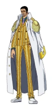
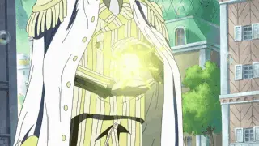
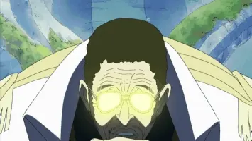

点击人名可依次查看人物介绍
| 赤犬 | 黄猿 | 青雉 | 藤虎 |
|  | 波鲁萨利诺，《航海王》及其衍生作品中的角色。海军代号“黄猿”，是“海军本部”最高战力“海军本部大将”之一，自然系“闪闪果实”能力者。性格让人捉摸不透，秉承着“模棱两可的正义”的观念。负责统帅战桃丸率领的海军科学部队 |
||
果实：闪闪果实
招式1：八咫镜 先在手中蓄积一片犹如镜子般的光，并射出光束折射反弹向周围的目标物，借此形成一条光之轨道，并能透过其轨道来光速移动 |
 |
招式2：天丛云剑 将光子凝聚于手上并形成一把光之剑作为武器，攻击目标 |
 |
招式3：八尺琼勾玉 光子化飞上半空后，向目标发射无数耀眼的光弹，属大范围攻击招式 |